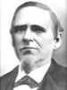
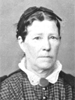
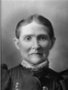
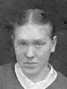
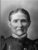
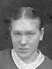

Napoleon Bonapart Roundy Families Information and Photos
Home
Histories
Charts
Photos
Maps
Restricted
News
Info
Contact
| <--(return)-- |   | Shadrach Roundy and Betsy Quimby | ----> | ----> | Lorenzo Wesley and Susannah Wallace |
 12 12
| Napoleon Bonapart Roundy , Louisa Jane Higgins  and Elizabeth Margaret Williams
|
Napoleon Bonapart and Elizabeth Margaret Williams
Now we come to the colorful life-story of Napoleon Bonaparte Roundy, second son of Lorenzo Wesley and Susannah Wallace Roundy. Napoleon was born in Centerville, Utah, in 1851. He was only a boy when his father moved his family to help settle Southern Utah, with other pioneers. First they took up quarters at the wild frontier of Kanab, then Long Valley and finally Kanarra, where they were forced to live within the walls of a fort to protect themselves from hostile Indians. Later, when the Indians and their white neighbors became more friendly, the village of Kanarra was deveopled a few miles South of the Fort. This town flourished under the leadership of Bishop Lorenzo W. Roundy, Napoleon's father. It called for great courage and endurance on the part of these settlers, but they were real home-makers, intelligent and industrious, and bore their trials and tribulations with fortitude born of extreme hardships. Napoleon was early in life called upon to stand guard over their livestock against the Indians, and thus became an expert marksman. He earned the money to buy his first gun at the age of twelve, bu "shocking" wheat for neighbors by moonlight after he had finished his day's work for his father. Napoleon played a drum, while his brothers played fifes, in the town band.
In 1872 Napoleon married Elizabeth M. Williams. Their first home was a three-room brick house newly built for them. When it was completed, Napoleon said to his young wife, "Well, Elizabeth, we will move home today. If you will carry the drum, I'll carry the gun." They all laughed, but it was literally true - they had little but the drum, gun and house. Napoleon had worked for his father until he was twenty-one, a few months before he married Elizabeth, and consequently had very little money saved to start housekeeping. His mother gave them the necessities for furnishing their little home.
[to be continued]
Napoleon, Louisa and children
Napoleon Roundy Home in Escalante, UT